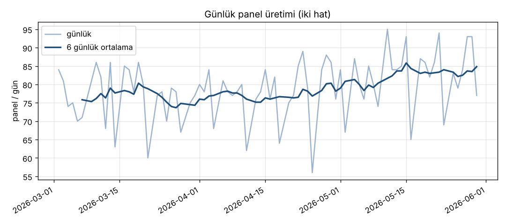
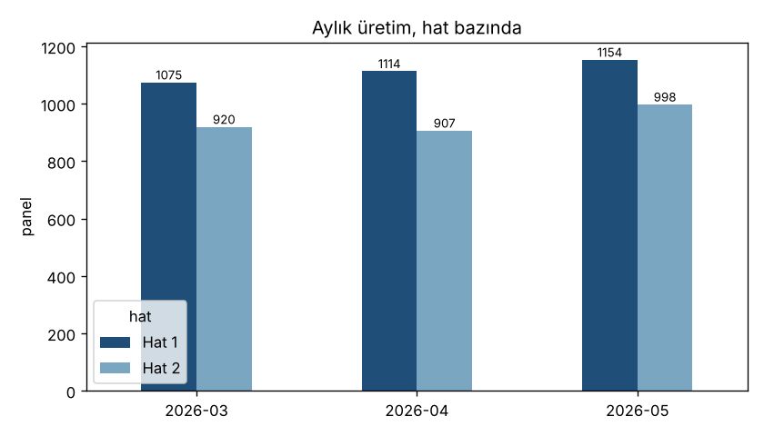

Python ile Veri Analizi (pandas)
Excel'de saatler süren tabloları birkaç satır Python ile analiz etmek için 7 günlük bir program. pandas ile CSV ve Excel dosyalarını okur, satır ve sütun seçer, kirli veriyi temizler, groupby ve pivot tabloyla özetler, tabloları birleştirir, zaman serilerini inceler ve grafik çizersin. Sonunda bir cephe projesinin sipariş verisinden çok sayfalı bir Excel raporu üreten kendi betiğini yazarsın. Örnek veri dosyaları indirilebilir.
Başlamadan önce
Kimler için
Excel ile çok çalışan mühendisler, metraj ve maliyet takibi yapanlar, raporlarını otomatikleştirmek isteyenler, veri bilimine başlamak isteyenler. Temel Python bilgisi (değişken, liste, döngü, fonksiyon) yeterlidir; yoksa önce Programlama Temelleri eğitimine bak.
Gerekenler
- Python 3.11 ya da üstü (python.org).
- pandas, matplotlib ve openpyxl: terminalde
pip install pandas matplotlib openpyxl. - VS Code ve Python eklentisi ya da Jupyter (
pip install notebook). - Örnek veri: siparisler.csv, siparisler_ham.csv, projeler.csv, uretim.csv.
Program
| Gün | Konu | Ne öğrenirsin | Süre |
|---|---|---|---|
| 1. gün | Kurulum ve ilk DataFrame | pandas nedir, kurulum, Series, DataFrame, read_csv, head, info, describe, shape, dtypes, sütun seçmek | ~4 saat |
| 2. gün | Seçmek, süzmek, sıralamak | loc ve iloc, koşullu süzme, isin, between, query, sort_values, yeni sütun, assign, value_counts | ~4 saat |
| 3. gün | Veri temizliği | Ayraç ve ondalık, sütun adları, eksik veri, tekrarlar, metin düzeltme, to_numeric, to_datetime, astype | ~4 saat |
| 4. gün | Gruplama ve özet | groupby, agg, birden çok anahtar, pivot_table, crosstab, cumsum, rank, transform | ~4 saat |
| 5. gün | Tabloları birleştirmek | merge ve how, anahtar sorunları, concat, melt ve pivot, uzun ve geniş veri | ~4 saat |
| 6. gün | Zaman serileri ve grafik | Tarih indeksi, dt erişimcisi, resample, rolling, matplotlib ile çizgi, çubuk ve dağılım grafiği | ~4 saat |
| 7. gün | Excel raporu ve proje | read_excel, to_excel, ExcelWriter ile çok sayfa, biçimlendirme, sipariş analizi projesi, sonraki adımlar | ~4 saat |
Her günün sonunda bir kontrol listesi var. İşaretledikçe ilerlemen bu tarayıcıda saklanır. Hafta içi sadece akşamları çalışırsan program yaklaşık iki hafta sürer. Bütün kod örnekleri Python 3.13, pandas 3.0 ve matplotlib 3.11 ile çalıştırılıp çıktıları kontrol edilmiştir. pandas 2.x kullanıyorsan metin sütunlarının tipi str yerine object görünür; geri kalan her şey aynıdır.
Kurulum ve ilk DataFrame
Hedef
Gün sonunda pandas'ın ne işe yaradığını bilecek, kurulumu yapıp bir CSV dosyasını DataFrame olarak okuyacak ve head, info, describe ile ilk bakışta veriyi tanıyacaksın. Series ile DataFrame arasındaki farkı ve sütun seçmeyi öğreneceksin. Süre yaklaşık 4 saat.
Bu kurs hakkında: Örnek veri, bir cephe firmasının 2026'nın ilk yarısındaki malzeme siparişleridir: hangi proje için, hangi tedarikçiden, ne kadar, kaça alındığı. Dosyaları kurs sayfasının başındaki "Gerekenler" bölümünden indirip çalışma klasörüne koy. Bütün örnekler kodu bu klasörde çalıştırdığını varsayar.
1. pandas nedir? (30 dk)
pandas, Python'da tablo biçimindeki veriyle çalışmak için kullanılan kütüphanedir. Excel'deki bir sayfanın Python'daki karşılığı gibi düşünebilirsin, ama:
- Yüz binlerce satırı saniyeler içinde işler; Excel'in yavaşladığı yerde zorlanmaz.
- Her adım kod olarak yazıldığı için tekrarlanabilir: gelecek ay yeni dosya gelince aynı betiği çalıştırırsın.
- CSV, Excel, JSON, SQL veritabanı ve web'deki tablolar dahil hemen her kaynaktan okuyup yazar.
- matplotlib (grafik), scikit-learn (makine öğrenmesi) gibi kütüphanelerin ortak dili hâline gelmiştir.
Ad "panel data" (çok boyutlu veri) kelimelerinden gelir; hayvanla ilgisi yoktur.
2. Kurulum ve çalışma ortamı (30 dk)
Terminalde (Windows'ta PowerShell ya da Komut İstemi) şunu çalıştır:
pip install pandas matplotlib openpyxl
openpyxl, pandas'ın Excel dosyası okuyup yazmak için kullandığı yardımcı kütüphanedir. Windows'ta pip bulunamazsa py -m pip install ... dene.
Kodu iki yerde yazabilirsin:
- VS Code'da .py dosyası: Betiği baştan sona çalıştırırsın. Rapor gibi tekrar tekrar çalışacak işler için idealdir.
- Jupyter defteri (.ipynb): Kodu hücre hücre çalıştırıp çıktıyı hemen altında görürsün. Veriyi keşfederken çok pratiktir. VS Code .ipynb dosyalarını doğrudan açar.
Jupyter'de bir hücrenin son satırındaki değişken otomatik olarak gösterilir. .py dosyasında ise print() gerekir. Kurstaki örnekler her iki ortamda da aynı çıktıyı versin diye print() kullanır.
pandas her zaman pd kısaltmasıyla içe aktarılır:
import pandas as pd
print(pd.__version__)
3.0.5
3. Series: tek sütun (30 dk)
Series, etiketli tek boyutlu bir veri dizisidir: değerler ve her değerin bir indeksi (etiketi) vardır.
import pandas as pd
adet = pd.Series([48, 36, 120, 40], index=["D-01", "D-02", "C-01", "C-02"], name="adet")
print(adet)
print()
print("C-01:", adet["C-01"])
print("Toplam:", adet.sum(), "· Ortalama:", adet.mean())
D-01 48
D-02 36
C-01 120
C-02 40
Name: adet, dtype: int64
C-01: 120
Toplam: 244 · Ortalama: 61.0
Series'le yapılan işlemler bütün elemanlara birden uygulanır; döngü yazmana gerek yoktur:
import pandas as pd
adet = pd.Series([48, 36, 120, 40], index=["D-01", "D-02", "C-01", "C-02"])
fiyat = pd.Series([1250, 1250, 2100, 2650], index=["D-01", "D-02", "C-01", "C-02"])
tutar = adet * fiyat
print(tutar)
print(tutar[tutar > 100_000])
D-01 60000
D-02 45000
C-01 252000
C-02 106000
dtype: int64
C-01 252000
C-02 106000
dtype: int64
adet * fiyat aynı etiketli elemanları çarptı. tutar > 100_000 her eleman için True/False içeren bir Series üretir; köşeli parantez içine konunca sadece True olanları seçer. Bu koşullu seçme yarın en çok kullanacağın araç olacak.
4. DataFrame ve CSV okumak (1 saat)
DataFrame, aynı indeksi paylaşan Series'lerden oluşan bir tablodur: her sütun bir Series'tir. En çok CSV dosyasından oluşturulur:
import pandas as pd
df = pd.read_csv("siparisler.csv")
print(df.head())
siparis_no tarih proje poz ... miktar birim birim_fiyat durum
0 S-1001 2026-01-06 Kule A D-01 ... 24 adet 1250 teslim edildi
1 S-1002 2026-01-09 AVM Cephe K-02 ... 12 adet 980 teslim edildi
2 S-1003 2026-01-12 Kule B C-03 ... 120 m2 2100 teslim edildi
3 S-1004 2026-01-15 Kule A P-01 ... 60 m2 640 teslim edildi
4 S-1005 2026-01-21 Kule A A-02 ... 12 adet 310 teslim edildi
[5 rows x 10 columns]
head() ilk 5 satırı gösterir; head(10) ilk 10, tail() son 5 satırı. Soldaki 0, 1, 2… pandas'ın otomatik verdiği indekstir.
Tablo geniş olduğu için pandas sütunları alt alta böldü ya da ... ile kısalttıysa, gösterimi genişletebilirsin:
import pandas as pd
pd.set_option("display.width", 120)
pd.set_option("display.max_columns", 20)
Kursun geri kalanında okunabilirlik için çoğunlukla birkaç sütun seçip göstereceğiz.
5. İlk bakış: shape, info, describe (1 saat)
Yeni bir veri setiyle karşılaşınca ilk dört soru: kaç satır ve sütun var, sütunların tipleri ne, eksik değer var mı, sayısal sütunlar hangi aralıkta?
import pandas as pd
df = pd.read_csv("siparisler.csv")
print(df.shape)
print(df.columns.tolist())
df.info()
(48, 10)
['siparis_no', 'tarih', 'proje', 'poz', 'malzeme', 'tedarikci', 'miktar', 'birim', 'birim_fiyat', 'durum']
<class 'pandas.DataFrame'>
RangeIndex: 48 entries, 0 to 47
Data columns (total 10 columns):
# Column Non-Null Count Dtype
--- ------ -------------- -----
0 siparis_no 48 non-null str
1 tarih 48 non-null str
2 proje 48 non-null str
3 poz 48 non-null str
4 malzeme 48 non-null str
5 tedarikci 48 non-null str
6 miktar 48 non-null int64
7 birim 48 non-null str
8 birim_fiyat 48 non-null int64
9 durum 48 non-null str
dtypes: int64(2), str(8)
memory usage: 3.9 KB
shape: (satır, sütun) sayısı.info(): her sütunun adı, boş olmayan değer sayısı ve tipi. Burada bütün sütunlar 48 dolu, yani eksik değer yok.- Tipler:
int64tam sayı,float64ondalıklı sayı,strmetin.tarihsütunu şimdilik metin olarak okundu; 3. günde gerçek tarihe çevireceğiz.
describe() sayısal sütunların özet istatistiklerini verir:
import pandas as pd
df = pd.read_csv("siparisler.csv")
print(df.describe())
miktar birim_fiyat
count 48.000000 48.000000
mean 59.791667 947.250000
std 46.160201 679.225357
min 12.000000 185.000000
25% 19.500000 328.750000
50% 44.000000 835.500000
75% 80.000000 1275.000000
max 150.000000 2268.000000
count dolu değer sayısı, mean ortalama, std standart sapma (değerlerin ortalamadan ne kadar saçıldığı), min/max en küçük ve en büyük, 25%, 50%, 75% çeyrekler. 50% medyandır: değerlerin yarısı bundan küçüktür. Ortalama ile medyan çok farklıysa veride birkaç uç değer olabilir.
Metin sütunlarının özeti için include="str":
import pandas as pd
df = pd.read_csv("siparisler.csv")
print(df.describe(include="str")[["proje", "malzeme", "tedarikci", "durum"]])
proje malzeme tedarikci durum
count 48 48 48 48
unique 3 6 5 3
top Kule A Alüminyum dikme Alüm A.Ş. teslim edildi
freq 24 8 16 39
unique farklı değer sayısı, top en sık değer, freq o değerin kaç kez geçtiği.
6. Sütun seçmek ve basit hesaplar (45 dk)
Tek bir sütun köşeli parantezle seçilir ve Series döner; bir sütun listesi verirsen DataFrame döner:
import pandas as pd
df = pd.read_csv("siparisler.csv")
miktar = df["miktar"]
print(type(miktar).__name__, type(df[["proje", "miktar"]]).__name__)
print(df[["siparis_no", "proje", "miktar"]].head(3))
print("Toplam miktar:", miktar.sum())
print("Proje sayısı:", df["proje"].nunique(), "->", df["proje"].unique().tolist())
Series DataFrame
siparis_no proje miktar
0 S-1001 Kule A 24
1 S-1002 AVM Cephe 12
2 S-1003 Kule B 120
Toplam miktar: 2870
Proje sayısı: 3 -> ['Kule A', 'AVM Cephe', 'Kule B']
Dikkat: df["proje", "miktar"] (tek köşeli parantez) hata verir; birden çok sütun için içte bir liste olmalıdır: df[["proje", "miktar"]].
Yeni bir sütun, var olanlardan hesaplanarak eklenir. Her siparişin tutarını hesaplayalım:
import pandas as pd
df = pd.read_csv("siparisler.csv")
df["tutar"] = df["miktar"] * df["birim_fiyat"]
print(df[["siparis_no", "malzeme", "miktar", "birim_fiyat", "tutar"]].head())
print(f"Toplam sipariş tutarı: {df['tutar'].sum():,} TL")
siparis_no malzeme miktar birim_fiyat tutar
0 S-1001 Alüminyum dikme 24 1250 30000
1 S-1002 Alüminyum kayıt 12 980 11760
2 S-1003 Isıcam 120 2100 252000
3 S-1004 Kompozit panel 60 640 38400
4 S-1005 Ankraj braketi 12 310 3720
Toplam sipariş tutarı: 2,626,876 TL
f"{x:,}" sayıyı binlik ayraçla yazar. Türkçe biçim (nokta ile binlik) 7. günde Excel raporunda gelecek.
Alıştırma: siparisler.csv'yi oku. (1) Kaç farklı tedarikçi var? (2) En yüksek birim fiyat kaç? (3) tutar sütununu ekleyip ortalama sipariş tutarını yazdır. (4) Sadece siparis_no, tedarikci ve tutar sütunlarının son 3 satırını göster.
Gün sonu kontrolü (15 dk)
Seçmek, süzmek, sıralamak
Hedef
Gün sonunda loc ve iloc ile istediğin satır ve sütunları seçebilecek, bir ya da birden çok koşula göre süzme yapabilecek, tabloyu sıralayıp yeni sütunlar ekleyebileceksin. Bu, pandas'ta en çok kullanacağın beceridir: "Kule A'nın teslim edilmemiş cam siparişleri" gibi her soru bir süzmedir. Süre yaklaşık 4 saat.
Bugünkü bütün örnekler siparisler.csv dosyasını okuyarak başlar. Her kod bloğu kendi başına çalışsın diye import ve read_csv satırları her blokta tekrar yazıldı; Jupyter kullanıyorsan bunları bir kez çalıştırman yeterlidir.
1. loc ve iloc (1 saat)
Satır ve sütun seçmenin iki yolu vardır:
loc |
iloc |
|
|---|---|---|
| Neye göre | Etiket (indeks adı, sütun adı) | Konum (0'dan başlayan sıra numarası) |
| Dilim sonu | Dahil: loc[2:4] 2, 3, 4 |
Hariç: iloc[2:4] 2, 3 |
| Örnek | df.loc[5, "proje"] |
df.iloc[5, 2] |
Yazım her ikisinde de [satırlar, sütunlar] biçimindedir.
import pandas as pd
df = pd.read_csv("siparisler.csv")
print(df.loc[2, "malzeme"])
print(df.iloc[2, 4])
print(df.loc[2:4, ["siparis_no", "proje", "miktar"]])
print(df.iloc[-2:, :3])
Isıcam
Isıcam
siparis_no proje miktar
2 S-1003 Kule B 120
3 S-1004 Kule A 60
4 S-1005 Kule A 12
siparis_no tarih proje
46 S-1047 2026-06-21 Kule B
47 S-1048 2026-06-25 Kule A
iloc[-2:, :3] son iki satırı ve ilk üç sütunu verdi; Python listelerindeki dilimleme kurallarının aynısıdır.
Şu an indeks 0, 1, 2… olduğu için loc ve iloc satırlarda aynı görünüyor. Fark, indeksi anlamlı bir sütun yapınca ortaya çıkar:
import pandas as pd
df = pd.read_csv("siparisler.csv").set_index("siparis_no")
print(df.loc["S-1010", ["proje", "malzeme", "miktar"]])
print()
print(df.loc["S-1010":"S-1012", "malzeme"])
proje AVM Cephe
malzeme Kompozit panel
miktar 120
Name: S-1010, dtype: object
siparis_no
S-1010 Kompozit panel
S-1011 Ankraj braketi
S-1012 Yapısal silikon
Name: malzeme, dtype: str
set_index bir sütunu indeks yapar. Artık siparişleri numarasıyla çağırabiliyoruz. Tek satır seçince sonuç bir Series oldu; birden çok satırda DataFrame ya da (tek sütunda) Series döner. İndeksi tekrar sütuna çevirmek için reset_index() kullanılır.
2. Koşullu süzme (1 saat)
Süzmenin mantığı dün gördüğümüzle aynıdır: bir koşul her satır için True/False içeren bir Series (maske) üretir; maske köşeli parantez içinde sadece True satırları bırakır.
import pandas as pd
df = pd.read_csv("siparisler.csv")
maske = df["proje"] == "Kule B"
print(maske.head(4).tolist())
kuleB = df[maske]
print(len(kuleB), "sipariş")
print(kuleB[["siparis_no", "malzeme", "miktar"]].head(4))
[False, False, True, False]
12 sipariş
siparis_no malzeme miktar
2 S-1003 Isıcam 120
6 S-1007 Alüminyum dikme 18
10 S-1011 Ankraj braketi 12
14 S-1015 Isıcam 72
Birden çok koşul & (ve), | (veya), ~ (değil) ile birleştirilir. Her koşul parantez içinde olmalıdır; Python'un and ve or kelimeleri burada çalışmaz.
import pandas as pd
df = pd.read_csv("siparisler.csv")
df["tutar"] = df["miktar"] * df["birim_fiyat"]
sec = df[(df["proje"] == "Kule A") & (df["tutar"] > 100_000)]
print(sec[["siparis_no", "malzeme", "miktar", "tutar"]])
siparis_no malzeme miktar tutar
12 S-1013 Alüminyum dikme 150 187500
20 S-1021 Isıcam 48 100800
36 S-1037 Alüminyum dikme 96 129600
43 S-1044 Alüminyum kayıt 150 158700
Sık kullanılan yardımcılar:
import pandas as pd
df = pd.read_csv("siparisler.csv")
aluminyum = df[df["tedarikci"].isin(["Alüm A.Ş.", "PanelTek"])]
orta = df[df["miktar"].between(40, 60)]
bekleyen = df[df["durum"] != "teslim edildi"]
cam = df[df["malzeme"].str.contains("cam", case=False)]
print(len(aluminyum), len(orta), len(bekleyen), len(cam))
print(bekleyen[["siparis_no", "tarih", "malzeme", "durum"]])
24 10 9 8
siparis_no tarih malzeme durum
36 S-1037 2026-05-15 Alüminyum dikme üretimde
37 S-1038 2026-05-20 Alüminyum kayıt yolda
38 S-1039 2026-05-23 Isıcam yolda
39 S-1040 2026-05-26 Kompozit panel üretimde
41 S-1042 2026-06-01 Yapısal silikon üretimde
43 S-1044 2026-06-09 Alüminyum kayıt üretimde
44 S-1045 2026-06-12 Isıcam üretimde
45 S-1046 2026-06-17 Kompozit panel yolda
47 S-1048 2026-06-25 Yapısal silikon üretimde
isin(liste): değer listedekilerden biri mi?between(a, b): a ile b arasında mı (ikisi dahil)?str.contains(...): metin içinde geçiyor mu?case=Falsebüyük-küçük harfi önemsemez.
query: Aynı süzmeyi metin olarak da yazabilirsin. Uzun koşullarda daha okunaklıdır; dışarıdaki bir değişkene @ ile ulaşılır:
import pandas as pd
df = pd.read_csv("siparisler.csv")
esik = 100
print(df.query("proje == 'AVM Cephe' and miktar >= @esik")[["siparis_no", "malzeme", "miktar"]])
siparis_no malzeme miktar
9 S-1010 Kompozit panel 120
13 S-1014 Alüminyum kayıt 150
3. Sıralamak (30 dk)
sort_values bir ya da birden çok sütuna göre sıralar. ascending=False büyükten küçüğe demektir. nlargest ve nsmallest en büyük ya da en küçük N satırı kısa yoldan verir:
import pandas as pd
df = pd.read_csv("siparisler.csv")
df["tutar"] = df["miktar"] * df["birim_fiyat"]
print(df.sort_values("tutar", ascending=False)[["siparis_no", "malzeme", "tutar"]].head(3))
print(df.nlargest(3, "tutar")[["siparis_no", "tutar"]])
print(df.sort_values(["proje", "tarih"])[["proje", "tarih", "malzeme"]].head(4))
siparis_no malzeme tutar
2 S-1003 Isıcam 252000
30 S-1031 Alüminyum dikme 202500
12 S-1013 Alüminyum dikme 187500
siparis_no tutar
2 S-1003 252000
30 S-1031 202500
12 S-1013 187500
proje tarih malzeme
1 AVM Cephe 2026-01-09 Alüminyum kayıt
5 AVM Cephe 2026-01-25 Yapısal silikon
9 AVM Cephe 2026-02-06 Kompozit panel
13 AVM Cephe 2026-02-20 Alüminyum kayıt
Sıralama yeni bir DataFrame döndürür; df'nin kendisi değişmez. Sonucu saklamak istiyorsan bir değişkene ata: df = df.sort_values(...). İndeks numaraları satırlarla birlikte taşınır; 0'dan yeniden numaralamak için sonuna .reset_index(drop=True) eklenir.
4. Yeni sütunlar (45 dk)
Hesaplanan sütunlar dışında, koşula bağlı sütunlar da sık gerekir. numpy.where(koşul, doğruysa, yanlışsa) Excel'deki EĞER gibidir. Birden çok kademede pd.cut sayıyı aralıklara böler:
import numpy as np
import pandas as pd
df = pd.read_csv("siparisler.csv")
df["tutar"] = df["miktar"] * df["birim_fiyat"]
df["buyuk"] = np.where(df["tutar"] >= 100_000, "evet", "hayır")
df["sinif"] = pd.cut(df["tutar"], bins=[0, 20_000, 100_000, float("inf")], labels=["küçük", "orta", "büyük"])
print(df[["siparis_no", "tutar", "buyuk", "sinif"]].head(6))
siparis_no tutar buyuk sinif
0 S-1001 30000 hayır orta
1 S-1002 11760 hayır küçük
2 S-1003 252000 evet büyük
3 S-1004 38400 hayır orta
4 S-1005 3720 hayır küçük
5 S-1006 7400 hayır küçük
pd.cut'taki bins aralık sınırlarıdır: (0, 20 000], (20 000, 100 000], (100 000, ∞). labels her aralığın adıdır.
Metin sütunlarında .str ile Python'un metin işlemleri bütün sütuna uygulanır. Poz kodunun harf kısmını ayıralım:
import pandas as pd
df = pd.read_csv("siparisler.csv")
df["poz_grup"] = df["poz"].str.split("-").str[0]
df["malzeme_kisa"] = df["malzeme"].str.upper().str[:6]
print(df[["poz", "poz_grup", "malzeme", "malzeme_kisa"]].head(4))
poz poz_grup malzeme malzeme_kisa
0 D-01 D Alüminyum dikme ALÜMIN
1 K-02 K Alüminyum kayıt ALÜMIN
2 C-03 C Isıcam ISICAM
3 P-01 P Kompozit panel KOMPOZ
Çıktıdaki ALÜMIN'e dikkat: Python'un upper() işlevi dilden bağımsızdır ve küçük i'yi Türkçedeki gibi İ değil I yapar. Türkçe metinlerde büyük harfe çevirmek gerekiyorsa önce str.replace("i", "İ") uygulamak gibi küçük bir düzeltme gerekir.
assign ile birden çok sütunu tek seferde ve zincirleme ekleyebilirsin. Zincirleme yazım, adımları yukarıdan aşağı okunur kılar:
import pandas as pd
sonuc = (
pd.read_csv("siparisler.csv")
.assign(tutar=lambda d: d["miktar"] * d["birim_fiyat"],
kdvli=lambda d: d["tutar"] * 1.20)
.query("proje == 'Kule B'")
.sort_values("kdvli", ascending=False)
[["siparis_no", "malzeme", "tutar", "kdvli"]]
.head(3)
)
print(sonuc)
siparis_no malzeme tutar kdvli
2 S-1003 Isıcam 252000 302400.0
30 S-1031 Alüminyum dikme 202500 243000.0
38 S-1039 Isıcam 163296 195955.2
lambda d: "o anki tabloyu al" demektir; kdvli hesaplanırken bir önceki adımda eklenen tutar zaten mevcuttur.
5. Saymak: value_counts (30 dk)
"Hangi değerden kaç tane var?" sorusunun cevabı value_counts'tur:
import pandas as pd
df = pd.read_csv("siparisler.csv")
print(df["tedarikci"].value_counts())
print()
print(df["durum"].value_counts(normalize=True).round(3))
tedarikci
Alüm A.Ş. 16
CamSan 8
PanelTek 8
Ankraj Ltd 8
KimyaPro 8
Name: count, dtype: int64
durum
teslim edildi 0.812
üretimde 0.125
yolda 0.062
Name: proportion, dtype: float64
normalize=True sayılar yerine oranları verir. Sonuç bir Series olduğu için .head(), .sort_index() ve grafik çizme gibi işlemler zincirlenebilir.
Alıştırma: (1) Mart ve Nisan 2026'da verilen siparişleri süz (ipucu: tarih metin olduğu için df["tarih"].between("2026-03-01", "2026-04-30") çalışır, çünkü ISO tarihler alfabetik olarak da doğru sıralanır). (2) Bu dönemde en çok sipariş verilen tedarikçiyi bul. (3) CamSan'dan verilen siparişleri tutara göre sıralayıp en büyük ikisini yazdır. (4) Birim fiyatı 1000 TL'nin üstündeyse "pahalı", değilse "ucuz" yazan bir fiyat_sinif sütunu ekle ve her sınıfta kaç sipariş olduğunu say.
Gün sonu kontrolü (15 dk)
Veri temizliği
Hedef
Gün sonunda Türkçe Excel'den çıkmış "kirli" bir CSV dosyasını doğru ayraç ve ondalık ayarıyla okuyabilecek; sütun adlarını düzeltip eksik değerleri, tekrarlanan satırları, tutarsız yazımları ve yanlış tipleri temizleyebileceksin. Gerçek hayatta analiz zamanının büyük kısmı temizliğe gider. Süre yaklaşık 4 saat.
1. Kirli veriyi tanımak (30 dk)
siparisler_ham.csv, Türkçe ayarlı bir Excel'den "CSV" olarak kaydedilmiş bir dosyadır. Önce bir metin düzenleyicide ya da Python ile ilk satırlarına bakalım:
with open("siparisler_ham.csv", encoding="utf-8") as f:
for _ in range(4):
print(f.readline().rstrip())
Sipariş No;Tarih;Proje;Malzeme;Miktar;Birim Fiyat (TL);Durum
S-1001;06.01.2026;Kule A;Alüminyum dikme;24;1.250,00;teslim edildi
S-1002;09.01.2026;AVM Cephe;Alüminyum kayıt;12;980,00;teslim edildi
S-1003;12.01.2026; kule b ;Isıcam;120;2.100,00;teslim edildi
Hemen görünen sorunlar:
- Alanlar virgülle değil noktalı virgülle ayrılmış (Türkçe Excel'de virgül ondalık ayracıdır).
- Sayılarda nokta binlik, virgül ondalık ayracı:
1.250,00. - Tarihler gün.ay.yıl biçiminde.
- Sütun adlarında boşluk, Türkçe karakter ve parantez var.
- Proje adlarında fazladan boşluk ve tutarsız büyük-küçük harf:
kule b.
Varsayılan ayarlarla okumayı deneyelim:
import pandas as pd
ham = pd.read_csv("siparisler_ham.csv")
print(ham.shape)
print(ham.columns[0])
(15, 1)
Sipariş No;Tarih;Proje;Malzeme;Miktar;Birim Fiyat (TL);Durum
pandas virgül aradı, bulamadı ve her satırı tek bir sütun saydı. Çözüm ayracı söylemektir.
2. Doğru okumak (45 dk)
import pandas as pd
df = pd.read_csv("siparisler_ham.csv", sep=";", decimal=",", thousands=".")
print(df.shape)
df.info()
(15, 7)
<class 'pandas.DataFrame'>
RangeIndex: 15 entries, 0 to 14
Data columns (total 7 columns):
# Column Non-Null Count Dtype
--- ------ -------------- -----
0 Sipariş No 15 non-null str
1 Tarih 15 non-null int64
2 Proje 15 non-null str
3 Malzeme 15 non-null str
4 Miktar 13 non-null float64
5 Birim Fiyat (TL) 15 non-null str
6 Durum 14 non-null str
dtypes: float64(1), int64(1), str(5)
memory usage: 972.0 bytes
sep=";" ayracı, decimal="," ondalık işaretini, thousands="." binlik ayracını belirtir. Satır ve sütun sayısı doğru, ama info() üç sorun gösteriyor:
Tarihsütunuint64oldu!thousands="."bütün noktaları binlik ayracı sandı ve06.01.2026metnini6012026sayısına çevirdi. Bu, Türkçe dosyalarda sık düşülen bir tuzaktır. Çözüm, o sütunun metin olarak okunmasını söylemektir:dtype={"Tarih": str}.Miktarfloat64oldu, oysa tam sayı olmalı. Neden: boş hücreler var; pandas boşluğuNaNile gösterir veNaNondalıklı bir sayıdır.Birim Fiyat (TL)hâlâ metin. Bir hücrede sayı yerine "belirsiz" yazıyor; tek bir metin bütün sütunu metin yapar.
Tip sorunlarını 6. bölümde tek tek düzelteceğiz. Ders: okuduktan sonra her zaman info() ile tiplere bak.
3. Sütun adlarını düzeltmek (30 dk)
Boşluklu, Türkçe karakterli ve parantezli sütun adları kod yazarken sürekli ayağına takılır. Hepsini küçük harf, alt çizgili ve ASCII yapalım:
import pandas as pd
df = pd.read_csv("siparisler_ham.csv", sep=";", decimal=",", thousands=".")
tr = str.maketrans("çğıöşüÇĞİÖŞÜ", "cgiosuCGIOSU")
df.columns = (df.columns.str.translate(tr).str.lower()
.str.replace(r"\(.*\)", "", regex=True).str.strip().str.replace(" ", "_"))
print(df.columns.tolist())
['siparis_no', 'tarih', 'proje', 'malzeme', 'miktar', 'birim_fiyat', 'durum']
str.maketrans bir harf eşleme tablosu, translate onu uygular. regex=True ile \(.*\) deseni parantez içindekileri siler. Tek tek ad vermek istersen df.rename(columns={"Birim Fiyat (TL)": "birim_fiyat"}) de kullanılır.
4. Tekrarlanan satırlar (20 dk)
Aynı siparişin iki kez girildiği satırları bulup atalım:
import pandas as pd
df = pd.read_csv("siparisler_ham.csv", sep=";", decimal=",", thousands=".")
print("Tekrar eden satır:", df.duplicated().sum())
print(df[df.duplicated(keep=False)].iloc[:, :4])
df = df.drop_duplicates()
print(df.shape)
Tekrar eden satır: 1
Sipariş No Tarih Proje Malzeme
3 S-1004 15012026 Kule A Kompozit panel
4 S-1004 15012026 Kule A Kompozit panel
(14, 7)
duplicated() bir satır kendinden önce aynen görülmüşse True verir. keep=False ilk görüleni de işaretler, böylece çiftin ikisini birden görürsün. Sadece bazı sütunlara göre tekrar aramak için subset=["Sipariş No"] kullanılır; bu, aynı numaranın farklı bilgilerle iki kez girildiği durumları yakalar.
5. Metinleri düzeltmek (30 dk)
import pandas as pd
df = pd.read_csv("siparisler_ham.csv", sep=";", decimal=",", thousands=".")
print(df["Proje"].value_counts())
df["Proje"] = df["Proje"].str.strip().str.lower()
duzelt = {"kule a": "Kule A", "kule b": "Kule B", "avm cephe": "AVM Cephe"}
df["Proje"] = df["Proje"].map(duzelt)
print()
print(df["Proje"].value_counts())
Proje
Kule A 8
AVM Cephe 2
Kule B 2
kule b 1
AVM CEPHE 1
avm cephe 1
Name: count, dtype: int64
Proje
Kule A 8
AVM Cephe 4
Kule B 3
Name: count, dtype: int64
str.strip() baştaki ve sondaki boşlukları siler, str.lower() küçük harfe çevirir. Böylece yazımlar tek biçime iner; sonra map sözlükle doğru adlara çevirir. map, sözlükte bulamadığı değeri boş (NaN) yapar; bu da gözden kaçan bir yazımı fark etmeni sağlar. Bulamadığını olduğu gibi bırakmak istersen replace kullanılır.
6. Tipleri düzeltmek (45 dk)
Sayılar: pd.to_numeric(..., errors="coerce") sayıya çeviremediği değerleri hata vermek yerine NaN yapar. Önce sorunlu değerleri görelim:
import pandas as pd
df = pd.read_csv("siparisler_ham.csv", sep=";", decimal=",", thousands=".")
fiyat = df["Birim Fiyat (TL)"]
print(fiyat.head(3).tolist())
sayi = pd.to_numeric(fiyat.str.replace(".", "").str.replace(",", "."), errors="coerce")
print(df.loc[sayi.isna(), ["Sipariş No", "Birim Fiyat (TL)"]])
print(sayi.head(3).tolist())
['1.250,00', '980,00', '2.100,00']
Sipariş No Birim Fiyat (TL)
8 S-1008 belirsiz
[1250.0, 980.0, 2100.0]
Sütun metin olarak okunduğu için decimal ayarı uygulanmadı; bu yüzden önce binlik noktalarını silip ondalık virgülünü noktaya çevirdik. "belirsiz" yazan hücre NaN oldu ve hangi siparişte olduğunu gördük.
Tarihler: pd.to_datetime metni tarih tipine çevirir. Biçimi açıkça vermek hem hızlı hem güvenlidir; %d gün, %m ay, %Y dört haneli yıldır:
import pandas as pd
df = pd.read_csv("siparisler_ham.csv", sep=";", dtype={"Tarih": str})
df["Tarih"] = pd.to_datetime(df["Tarih"], format="%d.%m.%Y")
print(df["Tarih"].dtype)
print(df["Tarih"].head(3).dt.strftime("%Y-%m-%d").tolist())
print(df["Tarih"].min().date(), "→", df["Tarih"].max().date())
datetime64[us]
['2026-01-06', '2026-01-09', '2026-01-12']
2026-01-06 → 2026-02-20
Biçimi vermeseydin pandas 06.01.2026'yı 1 Haziran sanabilirdi (Amerikan sırası ay/gün). Türkçe verilerde ya format ya da dayfirst=True ver.
7. Eksik değerler (45 dk)
isna().sum() her sütundaki eksik değer sayısını verir:
import pandas as pd
df = pd.read_csv("siparisler_ham.csv", sep=";", decimal=",", thousands=".")
print(df.isna().sum())
print(df[df.isna().any(axis=1)].iloc[:, [0, 3, 4, 6]])
Sipariş No 0
Tarih 0
Proje 0
Malzeme 0
Miktar 2
Birim Fiyat (TL) 0
Durum 1
dtype: int64
Sipariş No Malzeme Miktar Durum
5 S-1005 Ankraj braketi NaN teslim edildi
12 S-1012 Yapısal silikon NaN teslim edildi
13 S-1013 Alüminyum dikme 150.0 NaN
any(axis=1) "satırda herhangi bir sütun eksikse" demektir. Eksik değerle ne yapacağın verinin anlamına bağlıdır; otomatik bir doğru cevap yoktur:
| Yöntem | Kod | Ne zaman |
|---|---|---|
| Satırı at | df.dropna(subset=["miktar"]) |
Değer olmadan satır işe yaramıyorsa |
| Sabit değerle doldur | df["durum"].fillna("bilinmiyor") |
Metin sütunlarında, "eksik" bilgisi korunsun diye |
| İstatistikle doldur | df["miktar"].fillna(df["miktar"].median()) |
Sayısal sütunda yaklaşık değer yeterliyse |
| Önceki değerle doldur | df["fiyat"].ffill() |
Zaman sırasıyla değişen değerlerde |
| Olduğu gibi bırak | Hesaplarda pandas NaN'ı zaten atlar (sum, mean) |
Miktarı bilinmeyen bir siparişe ortalama miktar yazmak maliyet raporunu yanıltır. Burada en doğrusu, eksik miktarlı satırları ayrı bir "kontrol edilecekler" listesine almak ve analizden çıkarmaktır.
8. Hepsi bir arada: temizlik fonksiyonu (30 dk)
Temizlik adımlarını bir fonksiyonda toplamak, yeni bir ham dosya geldiğinde tek satırla aynı işlemi yapmanı sağlar:
import pandas as pd
def temizle(yol):
df = pd.read_csv(yol, sep=";", dtype=str)
df.columns = ["siparis_no", "tarih", "proje", "malzeme", "miktar", "birim_fiyat", "durum"]
df = df.drop_duplicates()
df["tarih"] = pd.to_datetime(df["tarih"], format="%d.%m.%Y")
df["proje"] = df["proje"].str.strip().str.lower().map(
{"kule a": "Kule A", "kule b": "Kule B", "avm cephe": "AVM Cephe"})
df["miktar"] = pd.to_numeric(df["miktar"], errors="coerce").astype("Int64")
df["birim_fiyat"] = pd.to_numeric(
df["birim_fiyat"].str.replace(".", "").str.replace(",", "."), errors="coerce")
df["durum"] = df["durum"].fillna("bilinmiyor")
kontrol = df[df[["miktar", "birim_fiyat"]].isna().any(axis=1)]
temiz = df.dropna(subset=["miktar", "birim_fiyat"]).reset_index(drop=True)
return temiz, kontrol
temiz, kontrol = temizle("siparisler_ham.csv")
print(temiz.dtypes)
print(f"{len(temiz)} temiz satır, {len(kontrol)} satır kontrol edilecek:")
print(kontrol[["siparis_no", "malzeme", "miktar", "birim_fiyat"]])
temiz.to_csv("siparisler_temiz.csv", index=False)
siparis_no str
tarih datetime64[us]
proje str
malzeme str
miktar Int64
birim_fiyat float64
durum str
dtype: object
11 temiz satır, 3 satır kontrol edilecek:
siparis_no malzeme miktar birim_fiyat
5 S-1005 Ankraj braketi <NA> 310.0
8 S-1008 Alüminyum kayıt 72 NaN
12 S-1012 Yapısal silikon <NA> 185.0
Birkaç yenilik:
dtype=strher şeyi metin olarak okur; dönüşümleri kendimiz, kontrollü yaparız.astype("Int64")(büyük I ile) boş değer alabilen tam sayı tipidir;int64boş değer alamaz.to_csv(..., index=False)temiz veriyi indeks sütunu olmadan kaydeder. Analizler artık bu dosyadan başlar; ham dosyaya hiç dokunmayız.
Alıştırma: Temizlenmiş veriye bir tutar sütunu ekle ve proje başına toplam tutarı hesapla. Sonra temizle fonksiyonuna, map sonrası boş kalan proje adlarını da kontrol listesine ekleyen bir satır yaz (yeni bir yazım hatası geldiğinde sessizce kaybolmasın).
Gün sonu kontrolü (15 dk)
Gruplama ve özet
Hedef
Gün sonunda groupby ile veriyi gruplara bölüp her gruba toplam, ortalama ve sayı gibi özetler uygulayabilecek; birden çok anahtarla gruplayabilecek, Excel'deki özet tablonun karşılığı olan pivot_table ve crosstab ile iki boyutlu raporlar üretebileceksin. Süre yaklaşık 4 saat.
1. Böl, uygula, birleştir (45 dk)
"Her proje için toplam tutar" gibi bir soru üç adımdan oluşur:
- Böl: satırları proje adına göre gruplara ayır.
- Uygula: her grupta
tutarsütununun toplamını al. - Birleştir: sonuçları tek bir tabloda topla.
pandas'ta bu tek satırdır:
import pandas as pd
df = pd.read_csv("siparisler.csv")
df["tutar"] = df["miktar"] * df["birim_fiyat"]
print(df.groupby("proje")["tutar"].sum())
proje
AVM Cephe 368822
Kule A 1211792
Kule B 1046262
Name: tutar, dtype: int64
Sonuç, indeksi proje adları olan bir Series'tir. Sık kullanılan özet fonksiyonları: sum, mean, median, min, max, count (dolu değer sayısı), size (satır sayısı), nunique (farklı değer sayısı), std.
Sonucu sıralayıp tabloya çevirmek için:
import pandas as pd
df = pd.read_csv("siparisler.csv")
df["tutar"] = df["miktar"] * df["birim_fiyat"]
ozet = (df.groupby("tedarikci")["tutar"].sum()
.sort_values(ascending=False)
.reset_index())
ozet["pay_%"] = (ozet["tutar"] / ozet["tutar"].sum() * 100).round(1)
print(ozet)
tedarikci tutar pay_%
0 Alüm A.Ş. 1214628 46.2
1 CamSan 892584 34.0
2 PanelTek 232374 8.8
3 Ankraj Ltd 201690 7.7
4 KimyaPro 85600 3.3
reset_index() grup adlarını indeksten çıkarıp normal bir sütun yapar; böylece sonuç, üstüne sütun eklenebilen düz bir tablo olur.
2. agg: birden çok özet (45 dk)
Her grup için birkaç özet birden istediğinde agg kullanılır. En okunaklı yazım adlandırılmış özetlerdir: yeni_ad=("sütun", "fonksiyon").
import pandas as pd
df = pd.read_csv("siparisler.csv")
df["tutar"] = df["miktar"] * df["birim_fiyat"]
ozet = df.groupby("proje").agg(
siparis=("siparis_no", "count"),
toplam=("tutar", "sum"),
ortalama=("tutar", "mean"),
en_buyuk=("tutar", "max"),
tedarikci=("tedarikci", "nunique"),
)
print(ozet.round(0))
siparis toplam ortalama en_buyuk tedarikci
proje
AVM Cephe 12 368822 30735.0 147000 3
Kule A 24 1211792 50491.0 187500 5
Kule B 12 1046262 87188.0 252000 3
Kendi fonksiyonunu da verebilirsin. Örneğin "teslim edilmemiş sipariş sayısı":
import pandas as pd
df = pd.read_csv("siparisler.csv")
print(df.groupby("proje")["durum"].agg(lambda s: (s != "teslim edildi").sum()))
proje
AVM Cephe 3
Kule A 5
Kule B 1
Name: durum, dtype: int64
3. Birden çok anahtarla gruplamak (45 dk)
Bir listeyle gruplarsan her kombinasyon ayrı bir grup olur. Sonucun indeksi iki seviyeli olur (MultiIndex):
import pandas as pd
df = pd.read_csv("siparisler.csv")
df["tutar"] = df["miktar"] * df["birim_fiyat"]
g = df.groupby(["proje", "tedarikci"])["tutar"].sum()
print(g.head(6))
print()
print(g.loc["Kule B"])
proje tedarikci
AVM Cephe Alüm A.Ş. 196848
KimyaPro 42500
PanelTek 129474
Kule A Alüm A.Ş. 681780
Ankraj Ltd 85140
CamSan 298872
Name: tutar, dtype: int64
tedarikci
Alüm A.Ş. 336000
Ankraj Ltd 116550
CamSan 593712
Name: tutar, dtype: int64
unstack() iç seviyeyi sütunlara açar ve iki boyutlu bir tablo verir. Boş kalan kombinasyonlar NaN olur; fill_value=0 ile sıfır yazılır:
import pandas as pd
df = pd.read_csv("siparisler.csv")
df["tutar"] = df["miktar"] * df["birim_fiyat"]
tablo = df.groupby(["tedarikci", "proje"])["tutar"].sum().unstack(fill_value=0)
print(tablo)
proje AVM Cephe Kule A Kule B
tedarikci
Alüm A.Ş. 196848 681780 336000
Ankraj Ltd 0 85140 116550
CamSan 0 298872 593712
KimyaPro 42500 43100 0
PanelTek 129474 102900 0
Aya göre gruplamak. Tarihi gerçek tarih tipine çevirince dt erişimcisiyle ay, yıl, hafta gibi parçalarına ulaşırsın (ayrıntısı 6. günde):
import pandas as pd
df = pd.read_csv("siparisler.csv", parse_dates=["tarih"])
df["tutar"] = df["miktar"] * df["birim_fiyat"]
df["ay"] = df["tarih"].dt.to_period("M")
aylik = df.groupby("ay").agg(siparis=("siparis_no", "size"), tutar=("tutar", "sum"))
aylik["kumulatif"] = aylik["tutar"].cumsum()
print(aylik)
siparis tutar kumulatif
ay
2026-01 8 436340 436340
2026-02 8 668560 1104900
2026-03 8 266000 1370900
2026-04 8 413616 1784516
2026-05 9 505318 2289834
2026-06 7 337042 2626876
parse_dates=["tarih"] sütunu okurken tarihe çevirir. to_period("M") her tarihi ayına indirir. cumsum birikimli toplam verir: Haziran sonunda toplam harcamaya ulaşırsın.
4. pivot_table: özet tablo (1 saat)
pivot_table, Excel'deki Özet Tablo'nun (PivotTable) karşılığıdır: satırlara bir sütun, sütunlara başka bir sütun koyar ve kesişimlerde bir değeri özetler.
import pandas as pd
df = pd.read_csv("siparisler.csv")
df["tutar"] = df["miktar"] * df["birim_fiyat"]
pt = pd.pivot_table(df, index="malzeme", columns="proje", values="tutar",
aggfunc="sum", fill_value=0, margins=True, margins_name="Toplam")
print(pt)
proje AVM Cephe Kule A Kule B Toplam
malzeme
Alüminyum dikme 0 371400 336000 707400
Alüminyum kayıt 196848 310380 0 507228
Ankraj braketi 0 85140 116550 201690
Isıcam 0 298872 593712 892584
Kompozit panel 129474 102900 0 232374
Yapısal silikon 42500 43100 0 85600
Toplam 368822 1211792 1046262 2626876
margins=True satır ve sütun toplamlarını ekler. aggfunc bir liste de olabilir (["sum", "count"]); o zaman her özet için ayrı bir sütun grubu oluşur.
Gösterimi okunaklı yapmak için sayıları binlik ayraçla biçimlendirmek istersen sonucu değiştirmeden sadece yazdırırken biçimleyebilirsin:
import pandas as pd
df = pd.read_csv("siparisler.csv")
df["tutar"] = df["miktar"] * df["birim_fiyat"]
pt = pd.pivot_table(df, index="proje", columns="durum", values="tutar", aggfunc="sum", fill_value=0)
print(pt.map(lambda x: f"{x:,.0f}".replace(",", ".")))
durum teslim edildi yolda üretimde
proje
AVM Cephe 325.340 31.482 12.000
Kule A 850.084 0 361.708
Kule B 882.966 163.296 0
map her hücreye bir fonksiyon uygular. Burada sayıyı Türkçe biçimde (nokta binlik) metne çevirdik; bu tablo artık sadece gösterim içindir, hesapta kullanılmaz.
5. crosstab: sayım tablosu (20 dk)
pd.crosstab iki sütundaki değerlerin kaç kez birlikte geçtiğini sayar. normalize="index" her satırı yüzdeye çevirir:
import pandas as pd
df = pd.read_csv("siparisler.csv")
print(pd.crosstab(df["proje"], df["durum"]))
print()
print((pd.crosstab(df["proje"], df["durum"], normalize="index") * 100).round(0))
durum teslim edildi yolda üretimde
proje
AVM Cephe 9 2 1
Kule A 19 0 5
Kule B 11 1 0
durum teslim edildi yolda üretimde
proje
AVM Cephe 75.0 17.0 8.0
Kule A 79.0 0.0 21.0
Kule B 92.0 8.0 0.0
6. Gruplar içinde hesap: transform ve rank (30 dk)
groupby + transform her satıra kendi grubunun özetini yazar; satır sayısı değişmez. "Bu sipariş, projesinin toplamının yüzde kaçı?" gibi sorular için:
import pandas as pd
df = pd.read_csv("siparisler.csv")
df["tutar"] = df["miktar"] * df["birim_fiyat"]
df["proje_toplam"] = df.groupby("proje")["tutar"].transform("sum")
df["pay_%"] = (df["tutar"] / df["proje_toplam"] * 100).round(1)
df["proje_sira"] = df.groupby("proje")["tutar"].rank(ascending=False).astype(int)
print(df[df["proje_sira"] <= 2].sort_values(["proje", "proje_sira"])
[["proje", "siparis_no", "malzeme", "tutar", "pay_%", "proje_sira"]])
proje siparis_no malzeme tutar pay_% proje_sira
13 AVM Cephe S-1014 Alüminyum kayıt 147000 39.9 1
9 AVM Cephe S-1010 Kompozit panel 76800 20.8 2
12 Kule A S-1013 Alüminyum dikme 187500 15.5 1
43 Kule A S-1044 Alüminyum kayıt 158700 13.1 2
2 Kule B S-1003 Isıcam 252000 24.1 1
30 Kule B S-1031 Alüminyum dikme 202500 19.4 2
rank her grupta büyükten küçüğe sıra numarası verdi; <= 2 ile her projenin en büyük iki siparişini seçtik. Aynı iş df.sort_values("tutar").groupby("proje").tail(2) ile de yapılabilir.
Alıştırma: (1) Her malzeme için ortalama birim fiyatı ve toplam miktarı tek tabloda göster. (2) Tedarikçileri satırlara, ayları sütunlara koyan ve sipariş adedini sayan bir pivot tablo üret. (3) Her tedarikçinin en son sipariş tarihini bul (ipucu: max). (4) Fiyat artışını bul: her malzemenin Nisan öncesi ve sonrası ortalama birim fiyatını karşılaştır (ipucu: np.where(df["tarih"] < "2026-04-01", "önce", "sonra") ile bir dönem sütunu oluşturup pivot_table kullan).
Gün sonu kontrolü (15 dk)
Tabloları birleştirmek
Hedef
Gün sonunda iki tabloyu ortak bir sütuna göre merge ile birleştirebilecek, how seçeneğinin (inner, left, outer) sonucu nasıl değiştirdiğini bilecek, anahtar sorunlarını yakalayabilecek; aynı yapıdaki tabloları concat ile alt alta ekleyip melt ve pivot ile tabloyu uzun ve geniş biçimler arasında çevirebileceksin. Excel'deki DÜŞEYARA'nın (VLOOKUP) çok daha güçlü hâlidir. Süre yaklaşık 4 saat.
1. Neden birleştirmek? (20 dk)
Veriler genellikle birkaç tabloya bölünmüş gelir. Sipariş tablosunda sadece proje adı var; projenin şehri, işvereni ve bütçesi ayrı bir projeler.csv'dedir:
import pandas as pd
projeler = pd.read_csv("projeler.csv")
print(projeler)
proje sehir isveren butce
0 Kule A İstanbul Yapı Holding 2500000
1 Kule B İstanbul Yapı Holding 1800000
2 AVM Cephe Ankara Merkez AVM 1200000
3 Otel Ek Bina İzmir Ege Turizm 900000
"Hangi işverenin projelerine ne kadar harcandı ve bütçenin yüzde kaçı kullanıldı?" sorusu için iki tabloyu proje sütunu üzerinden birleştirmemiz gerekir. Dikkat: projeler.csv'de sipariş tablosunda hiç geçmeyen bir proje (Otel Ek Bina) var.
2. merge (1 saat)
pd.merge(sol, sag, on="anahtar", how=...) iki tabloyu anahtar sütunu eşleşen satırlardan birleştirir:
import pandas as pd
sip = pd.read_csv("siparisler.csv")
projeler = pd.read_csv("projeler.csv")
birlesik = pd.merge(sip, projeler, on="proje", how="left")
print(birlesik.shape)
print(birlesik[["siparis_no", "proje", "sehir", "isveren", "butce"]].head(4))
(48, 13)
siparis_no proje sehir isveren butce
0 S-1001 Kule A İstanbul Yapı Holding 2500000
1 S-1002 AVM Cephe Ankara Merkez AVM 1200000
2 S-1003 Kule B İstanbul Yapı Holding 1800000
3 S-1004 Kule A İstanbul Yapı Holding 2500000
Satır sayısı değişmedi (48), sütunlar arttı: her siparişin yanına projesinin bilgileri geldi.
how seçeneği eşleşmeyen satırlara ne olacağını belirler:
how |
Sonuçta kalanlar |
|---|---|
"inner" (varsayılan) |
Sadece iki tabloda da bulunan anahtarlar |
"left" |
Soldaki bütün satırlar; sağda eşi yoksa sağ sütunlar boş |
"right" |
Sağdaki bütün satırlar |
"outer" |
İki taraftaki bütün anahtarlar |
Farkı görmek için projelere göre özetleyip birleştirelim:
import pandas as pd
sip = pd.read_csv("siparisler.csv")
sip["tutar"] = sip["miktar"] * sip["birim_fiyat"]
harcama = sip.groupby("proje", as_index=False)["tutar"].sum()
projeler = pd.read_csv("projeler.csv")
for how in ["inner", "left", "right"]:
s = pd.merge(harcama, projeler[["proje", "butce"]], on="proje", how=how)
print(how, "->", len(s), "satır:", s["proje"].tolist())
inner -> 3 satır: ['AVM Cephe', 'Kule A', 'Kule B']
left -> 3 satır: ['AVM Cephe', 'Kule A', 'Kule B']
right -> 4 satır: ['Kule A', 'Kule B', 'AVM Cephe', 'Otel Ek Bina']
right ile birleştirince siparişi olmayan Otel Ek Bina da geldi. Bütçe kullanımı raporu için doğru seçim budur: harcaması sıfır olan projeyi de görmek isteriz.
import pandas as pd
sip = pd.read_csv("siparisler.csv")
sip["tutar"] = sip["miktar"] * sip["birim_fiyat"]
harcama = sip.groupby("proje", as_index=False)["tutar"].sum()
projeler = pd.read_csv("projeler.csv")
rapor = pd.merge(projeler, harcama, on="proje", how="left")
rapor["tutar"] = rapor["tutar"].fillna(0).astype(int)
rapor["kullanim_%"] = (rapor["tutar"] / rapor["butce"] * 100).round(1)
rapor["kalan"] = rapor["butce"] - rapor["tutar"]
print(rapor[["proje", "isveren", "butce", "tutar", "kullanim_%", "kalan"]])
proje isveren butce tutar kullanim_% kalan
0 Kule A Yapı Holding 2500000 1211792 48.5 1288208
1 Kule B Yapı Holding 1800000 1046262 58.1 753738
2 AVM Cephe Merkez AVM 1200000 368822 30.7 831178
3 Otel Ek Bina Ege Turizm 900000 0 0.0 900000
Burada projeler solda olduğu için how="left" kullandık; sonuç aynıdır. as_index=False, groupby sonucunu indeks yerine normal sütunla döndürür; birleştirmeden önce kullanışlıdır.
3. Anahtar sorunları (45 dk)
Birleştirmede en sık üç sorun çıkar:
- Farklı sütun adları: soldaki
proje, sağdakiproje_adi. Çözüm:left_on="proje", right_on="proje_adi"ya da öncerename. - Yazım farkları:
"Kule A"ile"Kule A "(sonda boşluk) eşleşmez. Dünkü temizlik adımları birleştirmeden önce yapılmalıdır. - Tekrarlanan anahtarlar: sağdaki tabloda bir anahtar iki kez geçerse soldaki satır ikiye çoğalır ve toplamlar yanlış çıkar.
Üçüncüsü sessiz ve tehlikeli bir hatadır. validate parametresi bunu yakalar:
import pandas as pd
sip = pd.read_csv("siparisler.csv")
projeler = pd.read_csv("projeler.csv")
hatali = pd.concat([projeler, projeler.iloc[[0]]]) # Kule A iki kez
print(len(pd.merge(sip, hatali, on="proje", how="left")), "satır (48 olmalıydı)")
try:
pd.merge(sip, hatali, on="proje", how="left", validate="many_to_one")
except pd.errors.MergeError as e:
print("MergeError:", str(e).splitlines()[0])
72 satır (48 olmalıydı)
MergeError: Merge keys are not unique in right dataset; not a many-to-one merge
validate="many_to_one" "solda bir anahtar birçok kez geçebilir, sağda en fazla bir kez" demektir. Kural bozulursa birleştirme hata verir ve 72 satırlık yanlış tabloyla rapor yazmazsın.
indicator=True her satırın nereden geldiğini gösteren bir _merge sütunu ekler; eşleşmeyenleri bulmak için idealdir:
import pandas as pd
harcama = pd.DataFrame({"proje": ["Kule A", "Kule B", "AVM Cephe", "Kule C"], "tutar": [1, 2, 3, 4]})
projeler = pd.read_csv("projeler.csv")
k = pd.merge(harcama, projeler[["proje"]], on="proje", how="outer", indicator=True)
print(k[k["_merge"] != "both"])
proje tutar _merge
3 Kule C 4.0 left_only
4 Otel Ek Bina NaN right_only
left_only: sadece solda (projeler listesinde olmayan Kule C, büyük olasılıkla bir yazım ya da eksik kayıt), right_only: sadece sağda.
4. concat: alt alta eklemek (30 dk)
Aynı sütunlara sahip tabloları (örneğin her ay ayrı gelen dosyaları) alt alta eklemek için pd.concat kullanılır. Örnek için sipariş tablosunu iki çeyreğe bölüp ayrı dosyalara yazalım, sonra tekrar birleştirelim:
import pandas as pd
sip = pd.read_csv("siparisler.csv")
sip[sip["tarih"] < "2026-04-01"].to_csv("siparis_q1.csv", index=False)
sip[sip["tarih"] >= "2026-04-01"].to_csv("siparis_q2.csv", index=False)
parcalar = []
for dosya in ["siparis_q1.csv", "siparis_q2.csv"]:
p = pd.read_csv(dosya)
p["kaynak"] = dosya
parcalar.append(p)
hepsi = pd.concat(parcalar, ignore_index=True)
print(hepsi["kaynak"].value_counts())
print(hepsi.shape)
kaynak
siparis_q1.csv 24
siparis_q2.csv 24
Name: count, dtype: int64
(48, 11)
ignore_index=True indeksi 0'dan yeniden numaralar. Bir klasördeki bütün CSV'leri okumak için glob ile aynı kalıp kullanılır: pd.concat([pd.read_csv(f) for f in sorted(Path("gelen").glob("*.csv"))]).
5. Uzun ve geniş veri: melt ve pivot (1 saat)
Aynı bilgi iki biçimde tutulabilir:
- Geniş: her ay ayrı bir sütun. İnsanlar okumak için bunu sever; Excel tabloları genellikle böyledir.
- Uzun: her satır tek bir gözlem (proje, ay, değer). pandas'ta gruplamak, süzmek ve grafik çizmek için bu biçim çok daha kolaydır.
melt genişi uzuna, pivot uzunu genişe çevirir. Planlanan aylık hakediş tablosu geniş biçimde gelmiş olsun:
import pandas as pd
plan = pd.DataFrame({
"proje": ["Kule A", "Kule B", "AVM Cephe"],
"Ocak": [400_000, 300_000, 150_000],
"Şubat": [450_000, 350_000, 150_000],
"Mart": [500_000, 400_000, 200_000],
})
uzun = plan.melt(id_vars="proje", var_name="ay", value_name="plan_tutar")
print(uzun.head(5))
print(len(plan), "satır geniş ->", len(uzun), "satır uzun")
proje ay plan_tutar
0 Kule A Ocak 400000
1 Kule B Ocak 300000
2 AVM Cephe Ocak 150000
3 Kule A Şubat 450000
4 Kule B Şubat 350000
3 satır geniş -> 9 satır uzun
id_vars sabit kalacak sütun, var_name eski sütun adlarının gideceği yeni sütun, value_name değerlerin sütunudur. Artık "Şubat'ta toplam plan" gibi sorular basit bir süzme ve toplamadır.
Ters yönde pivot:
import pandas as pd
uzun = pd.DataFrame({
"proje": ["Kule A", "Kule A", "Kule B", "Kule B"],
"ay": ["Ocak", "Şubat", "Ocak", "Şubat"],
"plan_tutar": [400_000, 450_000, 300_000, 350_000],
})
genis = uzun.pivot(index="proje", columns="ay", values="plan_tutar")
print(genis[["Ocak", "Şubat"]])
ay Ocak Şubat
proje
Kule A 400000 450000
Kule B 300000 350000
pivot özet almaz, sadece yeniden düzenler; aynı (proje, ay) çifti iki kez geçerse hata verir. Tekrarlar varsa toplayarak düzenleyen pivot_table kullanılır. Sütunları alfabetik değil istediğin sırada görmek için sondaki [["Ocak", "Şubat"]] seçimi kullanıldı.
Plan ve gerçekleşen karşılaştırması (merge + melt birlikte):
import pandas as pd
plan = pd.DataFrame({"proje": ["Kule A", "Kule B", "AVM Cephe"],
"1": [400_000, 300_000, 150_000], "2": [450_000, 350_000, 150_000]})
plan = plan.melt(id_vars="proje", var_name="ay", value_name="plan")
plan["ay"] = plan["ay"].astype(int)
sip = pd.read_csv("siparisler.csv", parse_dates=["tarih"])
sip["ay"] = sip["tarih"].dt.month
sip["tutar"] = sip["miktar"] * sip["birim_fiyat"]
gercek = sip.groupby(["proje", "ay"], as_index=False)["tutar"].sum()
kars = pd.merge(plan, gercek, on=["proje", "ay"], how="left").fillna({"tutar": 0})
kars["fark"] = kars["tutar"] - kars["plan"]
print(kars.sort_values(["proje", "ay"]).to_string(index=False))
proje ay plan tutar fark
AVM Cephe 1 150000 19160 -130840
AVM Cephe 2 150000 223800 73800
Kule A 1 400000 142680 -257320
Kule A 2 450000 289840 -160160
Kule B 1 300000 274500 -25500
Kule B 2 350000 154920 -195080
on bir liste olabilir: proje ve ay birlikte eşleşmelidir. to_string(index=False) indeks sütunu olmadan yazar.
Alıştırma: (1) Siparişleri projeler.csv ile birleştirip şehir bazında toplam tutarı hesapla. (2) Bir tedarikçi tablosu oluştur (tedarikci, vade_gun: Alüm A.Ş. 60, CamSan 45, PanelTek 30, Ankraj Ltd 30) ve siparişlerle birleştir; KimyaPro'nun vadesi tabloda yok, indicator=True ile bunu tespit et. (3) Kendi oluşturduğun bir geniş tabloyu melt ile uzun yapıp tekrar pivot ile geri çevir.
Gün sonu kontrolü (15 dk)
Zaman serileri ve grafik
Hedef
Gün sonunda tarih sütunlarıyla rahatça çalışabilecek, dt ile tarihin parçalarına ulaşacak, resample ile günlük veriyi haftalık ve aylığa çevirecek, rolling ile hareketli ortalama hesaplayacak ve matplotlib ile çizgi, çubuk ve dağılım grafikleri çizip dosyaya kaydedebileceksin. Süre yaklaşık 4 saat.
Bugünkü veri uretim.csv: Mart–Mayıs 2026 arasında iki üretim hattında her gün üretilen cephe paneli ve fire (hatalı) panel sayısı. Pazar günleri çalışılmıyor.
1. Tarihlerle çalışmak (45 dk)
import pandas as pd
df = pd.read_csv("uretim.csv", parse_dates=["tarih"])
print(df.dtypes)
print(df.head(4))
print(df["tarih"].min().date(), "→", df["tarih"].max().date(), "·", df["tarih"].nunique(), "iş günü")
tarih datetime64[us]
hat str
panel int64
fire int64
dtype: object
tarih hat panel fire
0 2026-03-02 Hat 1 43 2
1 2026-03-02 Hat 2 41 1
2 2026-03-03 Hat 1 43 2
3 2026-03-03 Hat 2 38 0
2026-03-02 → 2026-05-30 · 78 iş günü
Tarih tipindeki bir sütunun dt erişimcisi tarihin parçalarını verir:
import pandas as pd
df = pd.read_csv("uretim.csv", parse_dates=["tarih"])
t = df["tarih"]
ek = pd.DataFrame({"tarih": t, "yil": t.dt.year, "ay": t.dt.month, "hafta": t.dt.isocalendar().week,
"gun_no": t.dt.dayofweek, "gun": t.dt.day_name()})
print(ek.drop_duplicates("tarih").head(7).to_string(index=False))
tarih yil ay hafta gun_no gun
2026-03-02 2026 3 10 0 Monday
2026-03-03 2026 3 10 1 Tuesday
2026-03-04 2026 3 10 2 Wednesday
2026-03-05 2026 3 10 3 Thursday
2026-03-06 2026 3 10 4 Friday
2026-03-07 2026 3 10 5 Saturday
2026-03-09 2026 3 11 0 Monday
dayofweek Pazartesi için 0, Pazar için 6'dır. day_name() İngilizce gün adı verir; Türkçe istiyorsan bir sözlükle map uygula. İki tarih arasındaki fark bir Timedelta'dır:
import pandas as pd
teslim = pd.Timestamp("2026-06-30")
bugun = pd.Timestamp("2026-05-15")
kalan = teslim - bugun
print(kalan, "·", kalan.days, "gün")
print(bugun + pd.Timedelta(days=45))
print(pd.bdate_range("2026-05-15", "2026-06-30").size, "iş günü (Pzt-Cum)")
46 days 00:00:00 · 46 gün
2026-06-29 00:00:00
33 iş günü (Pzt-Cum)
2. Tarih indeksi ve dilimleme (30 dk)
Zaman serisi analizinde tarihi indeks yapmak işleri çok kolaylaştırır. Önce iki hattın toplamını günlük olarak alalım:
import pandas as pd
df = pd.read_csv("uretim.csv", parse_dates=["tarih"])
gunluk = df.groupby("tarih")[["panel", "fire"]].sum()
print(gunluk.index[:3])
print(gunluk.loc["2026-04-06":"2026-04-08"])
print("Nisan toplamı:", gunluk.loc["2026-04", "panel"].sum())
DatetimeIndex(['2026-03-02', '2026-03-03', '2026-03-04'], dtype='datetime64[us]', name='tarih', freq=None)
panel fire
tarih
2026-04-06 81 3
2026-04-07 78 1
2026-04-08 77 2
Nisan toplamı: 2021
Tarih indeksinde "2026-04" gibi kısmi bir metinle bütün Nisan'ı seçebilirsin.
3. resample: frekans değiştirmek (45 dk)
resample, zaman serileri için groupby'dır: günlük veriyi haftalık, aylık gibi daha büyük aralıklara toplar. Kodlar: "D" gün, "W" hafta (Pazar biter), "W-MON" Pazartesi biten hafta, "MS" ay başı, "ME" ay sonu, "QE" çeyrek.
import pandas as pd
df = pd.read_csv("uretim.csv", parse_dates=["tarih"])
gunluk = df.groupby("tarih")[["panel", "fire"]].sum()
aylik = gunluk.resample("MS").sum()
aylik["fire_%"] = (aylik["fire"] / aylik["panel"] * 100).round(2)
aylik.index = aylik.index.strftime("%Y-%m")
print(aylik)
haftalik = gunluk["panel"].resample("W").sum()
print(haftalik.head(3))
panel fire fire_%
tarih
2026-03 1995 44 2.21
2026-04 2021 62 3.07
2026-05 2152 63 2.93
tarih
2026-03-08 455
2026-03-15 466
2026-03-22 473
Freq: W-SUN, Name: panel, dtype: int64
resample eksik günleri de aralığa katar: Pazar günleri veri olmadığı hâlde haftalık toplamlar doğru hesaplanır. Günlük veriyi resample("D") ile açarsan Pazarlar boş satır olarak görünür.
4. rolling: hareketli ortalama (30 dk)
Günlük üretim gürültülüdür; eğilimi görmek için hareketli ortalama kullanılır: her gün için son N günün ortalaması.
import pandas as pd
df = pd.read_csv("uretim.csv", parse_dates=["tarih"])
gunluk = df.groupby("tarih")["panel"].sum().to_frame()
gunluk["ort_6"] = gunluk["panel"].rolling(6).mean().round(1)
gunluk["degisim"] = gunluk["panel"].diff()
print(gunluk.head(8))
panel ort_6 degisim
tarih
2026-03-02 84 NaN NaN
2026-03-03 81 NaN -3.0
2026-03-04 74 NaN -7.0
2026-03-05 75 NaN 1.0
2026-03-06 70 NaN -5.0
2026-03-07 71 75.8 1.0
2026-03-09 81 75.3 10.0
2026-03-10 86 76.2 5.0
İlk 5 satırda ort_6 boştur, çünkü 6 günlük pencere henüz dolmadı (min_periods=1 verirsen eldeki kadarıyla hesaplar). diff() bir önceki satırla farkı, pct_change() yüzde değişimi verir. Burada pencere 6 gün, yani bir çalışma haftasıdır.
5. matplotlib ile grafik (1 saat 15 dk)
pandas grafikleri matplotlib ile çizer. Her Series ve DataFrame'in bir .plot() metodu vardır. Grafiği ekrana göstermek için plt.show(), dosyaya kaydetmek için plt.savefig() kullanılır. Jupyter'de grafik hücrenin altında kendiliğinden görünür.
Çizgi grafik (zaman serisi):
import pandas as pd
import matplotlib.pyplot as plt
df = pd.read_csv("uretim.csv", parse_dates=["tarih"])
gunluk = df.groupby("tarih")["panel"].sum()
fig, ax = plt.subplots(figsize=(9, 4))
gunluk.plot(ax=ax, color="#9db4cf", label="günlük")
gunluk.rolling(6).mean().plot(ax=ax, color="#1f4e79", linewidth=2, label="6 günlük ortalama")
ax.set_title("Günlük panel üretimi (iki hat)")
ax.set_xlabel("")
ax.set_ylabel("panel / gün")
ax.legend()
ax.grid(alpha=0.3)
fig.tight_layout()
fig.savefig("uretim_cizgi.png", dpi=120)
print("kaydedildi: uretim_cizgi.png")
kaydedildi: uretim_cizgi.png

fig, ax = plt.subplots() bir çizim alanı (fig) ve içinde bir eksen (ax) oluşturur. Bütün ayarlar (başlık, eksen adları, ızgara) ax üzerinden yapılır. Bu yazım, birden çok grafiği yan yana koymak istediğinde de aynı kalır.
Çubuk grafik (kategorileri karşılaştırmak):
import pandas as pd
import matplotlib.pyplot as plt
df = pd.read_csv("uretim.csv", parse_dates=["tarih"])
df["ay"] = df["tarih"].dt.strftime("%Y-%m")
tablo = df.pivot_table(index="ay", columns="hat", values="panel", aggfunc="sum")
print(tablo)
ax = tablo.plot(kind="bar", figsize=(7, 4), color=["#1f4e79", "#7aa6c2"], rot=0)
ax.set_title("Aylık üretim, hat bazında")
ax.set_xlabel("")
ax.set_ylabel("panel")
for kap in ax.containers:
ax.bar_label(kap, fontsize=8)
plt.tight_layout()
plt.savefig("uretim_cubuk.png", dpi=120)
hat Hat 1 Hat 2
ay
2026-03 1075 920
2026-04 1114 907
2026-05 1154 998

Geniş biçimdeki bir tabloda her sütun ayrı bir renk olur; bu yüzden önce pivot_table ile hatları sütunlara açtık. bar_label çubukların üstüne değerleri yazar. Yatay çubuk için kind="barh", üst üste yığılmış çubuk için stacked=True.
Dağılım grafiği (iki sayısal değişkenin ilişkisi): Çok panel üretilen günlerde fire de artıyor mu?
import pandas as pd
import matplotlib.pyplot as plt
df = pd.read_csv("uretim.csv")
print("korelasyon:", round(df["panel"].corr(df["fire"]), 3))
ax = df.plot(kind="scatter", x="panel", y="fire", alpha=0.5, figsize=(5, 4))
ax.set_title("Panel sayısı ve fire")
plt.tight_layout()
plt.savefig("panel_fire.png", dpi=120)
korelasyon: 0.071
Korelasyon -1 ile 1 arasında bir sayıdır: 1'e yakınsa birlikte artarlar, -1'e yakınsa biri artarken diğeri azalır, 0'a yakınsa doğrusal bir ilişki yoktur. Buradaki değer sıfıra çok yakın: bu veride fire, üretim miktarından bağımsız görünüyor. Bunu bilmek, fireyi azaltmak için "daha yavaş üretmek" gibi bir önlemin işe yaramayacağını söyler.
İyi grafik için birkaç kural: başlık ve eksen adı yaz; birimi belirt; renkleri az ve anlamlı kullan; çubuk grafiğin değer ekseni sıfırdan başlamalı; bir grafikte tek bir mesaj ver.
Alıştırma: (1) Hat bazında haftalık üretimi iki çizgi olarak aynı grafikte çiz. (2) Haftanın günlerine göre ortalama üretimi çubuk grafikle göster; Cumartesi neden düşük? (3) Aylık fire oranını hesaplayıp yüzde olarak çiz ve PNG olarak kaydet.
Gün sonu kontrolü (15 dk)
Excel raporu ve proje
Hedef
Gün sonunda Excel dosyalarını sayfa sayfa okuyup yazabilecek, ExcelWriter ile çok sayfalı ve biçimlendirilmiş bir rapor üretebileceksin. Kurs, öğrendiklerini birleştiren bir proje ile biter: sipariş verisinden her ay tek komutla çalışan bir maliyet raporu betiği. Süre yaklaşık 4 saat.
1. Excel okumak ve yazmak (45 dk)
to_excel bir DataFrame'i Excel sayfasına, read_excel bir sayfayı DataFrame'e çevirir. Her ikisi de arka planda openpyxl kullanır.
import pandas as pd
sip = pd.read_csv("siparisler.csv")
sip.to_excel("siparisler.xlsx", sheet_name="Siparişler", index=False)
geri = pd.read_excel("siparisler.xlsx")
print(geri.shape)
print(geri.dtypes[["tarih", "miktar", "birim_fiyat"]])
(48, 10)
tarih str
miktar int64
birim_fiyat int64
dtype: object
index=False olmasaydı Excel'in ilk sütununa 0, 1, 2… indeksi yazılırdı. Excel'de birden çok sayfa varsa:
| Yazım | Sonuç |
|---|---|
pd.read_excel("x.xlsx") |
İlk sayfa |
pd.read_excel("x.xlsx", sheet_name="Özet") |
Adı verilen sayfa |
pd.read_excel("x.xlsx", sheet_name=None) |
Bütün sayfalar, {ad: DataFrame} sözlüğü |
pd.read_excel("x.xlsx", skiprows=3, usecols="A:F") |
İlk 3 satırı atla, sadece A–F sütunları |
pd.read_excel("x.xlsx", header=1) |
Başlık 2. satırda |
Gerçek hayattaki Excel dosyalarında başlığın üstünde logo, proje adı ve tarih satırları olur; skiprows ya da header ile bunları atlarsın. Birleştirilmiş hücreler genellikle NaN olarak gelir; ffill() ile yukarıdaki değerle doldurulur.
2. Çok sayfalı rapor: ExcelWriter (45 dk)
Birden çok DataFrame'i aynı dosyanın farklı sayfalarına yazmak için pd.ExcelWriter kullanılır:
import pandas as pd
sip = pd.read_csv("siparisler.csv")
sip["tutar"] = sip["miktar"] * sip["birim_fiyat"]
proje = sip.groupby("proje", as_index=False)["tutar"].sum()
tedarik = sip.groupby("tedarikci", as_index=False)["tutar"].sum()
with pd.ExcelWriter("ozet.xlsx") as yazici:
proje.to_excel(yazici, sheet_name="Proje", index=False)
tedarik.to_excel(yazici, sheet_name="Tedarikçi", index=False)
sip.to_excel(yazici, sheet_name="Detay", index=False)
sayfalar = pd.read_excel("ozet.xlsx", sheet_name=None)
for ad, tablo in sayfalar.items():
print(f"{ad}: {tablo.shape[0]} satır × {tablo.shape[1]} sütun")
Proje: 3 satır × 2 sütun
Tedarikçi: 5 satır × 2 sütun
Detay: 48 satır × 11 sütun
with bloğu bitince dosya kaydedilir ve kapanır. Excel dosyası açıkken (Windows'ta) aynı adla yazmaya çalışırsan PermissionError alırsın; önce Excel'de kapat.
3. Biçimlendirmek (45 dk)
pandas veriyi yazar ama sütun genişliği, sayı biçimi ve başlık rengi gibi görünüm ayarlarını yapmaz. Bunlar için ExcelWriter'ın altındaki openpyxl çalışma kitabına ulaşırız:
import pandas as pd
from openpyxl.styles import Font, PatternFill
sip = pd.read_csv("siparisler.csv")
sip["tutar"] = sip["miktar"] * sip["birim_fiyat"]
proje = sip.groupby("proje", as_index=False).agg(siparis=("siparis_no", "count"), tutar=("tutar", "sum"))
with pd.ExcelWriter("bicimli.xlsx", engine="openpyxl") as yazici:
proje.to_excel(yazici, sheet_name="Proje", index=False)
ws = yazici.sheets["Proje"]
for hucre in ws[1]:
hucre.font = Font(bold=True, color="FFFFFF")
hucre.fill = PatternFill("solid", fgColor="1F4E79")
ws.column_dimensions["A"].width = 14
ws.column_dimensions["C"].width = 16
for satir in ws.iter_rows(min_row=2, min_col=3, max_col=3):
satir[0].number_format = '#,##0 "TL"'
ws.freeze_panes = "A2"
from openpyxl import load_workbook
ws = load_workbook("bicimli.xlsx")["Proje"]
print(ws["A1"].value, ws["A1"].font.bold, ws["C2"].number_format, ws.freeze_panes)
proje True #,##0 "TL" A2
ws[1]birinci satırdaki hücrelerdir (başlıklar); kalın beyaz yazı ve koyu mavi zemin verdik.number_formathücrenin değerini değiştirmeden Excel'deki görünümünü ayarlar:#,##0binlik ayraçlı tam sayı. Excel, ayraçları bilgisayarın bölge ayarına göre gösterir; Türkçe Windows'ta1.211.792 TLgörünür.freeze_panes = "A2"başlık satırını dondurur; aşağı kaydırırken başlık görünür kalır.
4. Proje: aylık maliyet raporu (1 saat 30 dk)
Şimdi kursun bütün parçalarını birleştirelim. Betik, sipariş ve proje dosyalarını okuyacak, temizlik denetimi yapacak ve beş sayfalı bir Excel raporu üretecek:
- Özet: her proje için bütçe, harcama, kullanım yüzdesi ve kalan.
- Tedarikçi: tedarikçi başına sipariş sayısı, tutar ve pay.
- Aylık: malzeme × ay pivot tablosu, toplamlarla.
- Bekleyen: teslim edilmemiş siparişler, en eskiden yeniye.
- Detay: bütün siparişler.
Aşağıdaki kodu rapor.py adıyla kaydet:
"""Sipariş verisinden aylık maliyet raporu (Excel) üretir.
Kullanım: python rapor.py [siparis.csv] [projeler.csv] [cikti.xlsx]
"""
import sys
import pandas as pd
from openpyxl.styles import Font, PatternFill
from openpyxl.utils import get_column_letter
TL = '#,##0 "TL"'
def oku(sip_yolu, prj_yolu):
sip = pd.read_csv(sip_yolu, parse_dates=["tarih"])
prj = pd.read_csv(prj_yolu)
eksik = sip[["miktar", "birim_fiyat"]].isna().any(axis=1).sum()
if eksik:
print(f"Uyarı: {eksik} satırda miktar ya da fiyat eksik, rapora alınmadı.")
sip = sip.dropna(subset=["miktar", "birim_fiyat"])
bilinmeyen = set(sip["proje"]) - set(prj["proje"])
if bilinmeyen:
raise ValueError(f"projeler dosyasında olmayan proje: {sorted(bilinmeyen)}")
sip["tutar"] = sip["miktar"] * sip["birim_fiyat"]
sip["ay"] = sip["tarih"].dt.strftime("%Y-%m")
return sip, prj
def tablolar(sip, prj):
harcama = sip.groupby("proje", as_index=False)["tutar"].sum()
ozet = prj.merge(harcama, on="proje", how="left", validate="one_to_one").fillna({"tutar": 0})
ozet["kullanim_%"] = (ozet["tutar"] / ozet["butce"] * 100).round(1)
ozet["kalan"] = ozet["butce"] - ozet["tutar"]
ted = (sip.groupby("tedarikci", as_index=False)
.agg(siparis=("siparis_no", "count"), tutar=("tutar", "sum"))
.sort_values("tutar", ascending=False))
ted["pay_%"] = (ted["tutar"] / ted["tutar"].sum() * 100).round(1)
aylik = sip.pivot_table(index="malzeme", columns="ay", values="tutar", aggfunc="sum",
fill_value=0, margins=True, margins_name="Toplam").reset_index()
bekleyen = (sip[sip["durum"] != "teslim edildi"]
.sort_values("tarih")
[["siparis_no", "tarih", "proje", "malzeme", "tedarikci", "tutar", "durum"]])
bekleyen["tarih"] = bekleyen["tarih"].dt.date
detay = sip.drop(columns="ay").assign(tarih=sip["tarih"].dt.date)
return {"Özet": ozet, "Tedarikçi": ted, "Aylık": aylik, "Bekleyen": bekleyen, "Detay": detay}
def bicimle(ws, df):
for h in ws[1]:
h.font = Font(bold=True, color="FFFFFF")
h.fill = PatternFill("solid", fgColor="1F4E79")
for i, ad in enumerate(df.columns, start=1):
harf = get_column_letter(i)
genislik = max(len(str(ad)), *(len(str(v)) for v in df[ad].head(100))) + 2
ws.column_dimensions[harf].width = min(genislik, 40)
if pd.api.types.is_numeric_dtype(df[ad]) and not ad.endswith("%") and ad not in ("siparis", "miktar"):
for (hucre,) in ws.iter_rows(min_row=2, min_col=i, max_col=i):
hucre.number_format = TL
ws.freeze_panes = "B2"
def yaz(tablolar_, yol):
with pd.ExcelWriter(yol, engine="openpyxl") as yazici:
for ad, df in tablolar_.items():
df.to_excel(yazici, sheet_name=ad, index=False)
bicimle(yazici.sheets[ad], df)
def main(argv):
sip_yolu = argv[1] if len(argv) > 1 else "siparisler.csv"
prj_yolu = argv[2] if len(argv) > 2 else "projeler.csv"
cikti = argv[3] if len(argv) > 3 else "maliyet_raporu.xlsx"
sip, prj = oku(sip_yolu, prj_yolu)
t = tablolar(sip, prj)
yaz(t, cikti)
toplam = f"{sip['tutar'].sum():,.0f}".replace(",", ".")
print(f"{cikti} yazıldı: {len(sip)} sipariş, toplam {toplam} TL")
for ad, df in t.items():
print(f" {ad:<10} {len(df):>3} satır")
if __name__ == "__main__":
main(sys.argv)
Betik dört fonksiyona bölündü: oku (yükle ve denetle), tablolar (hesapla), bicimle ve yaz (çıktı). Bu ayrım, bir parçayı değiştirirken diğerlerini bozmamanı ve her parçayı ayrı denemeni sağlar. Birkaç ayrıntı:
validate="one_to_one"ve bilinmeyen proje denetimi, 5. günde gördüğümüz sessiz hataları rapora girmeden yakalar.- Sütun genişliği, sütundaki en uzun metne göre hesaplanır (en fazla 40 karakter).
- Para sütunları
TLbiçimini alır; yüzde ve adet sütunları almaz. if __name__ == "__main__":bloğu, dosyaimportedildiğinde değil sadece doğrudan çalıştırıldığında çalışır.
Çalıştıralım:
python3 rapor.py
maliyet_raporu.xlsx yazıldı: 48 sipariş, toplam 2.626.876 TL
Özet 4 satır
Tedarikçi 5 satır
Aylık 7 satır
Bekleyen 9 satır
Detay 48 satır
Windows'ta python rapor.py yazılır. Raporu kontrol edelim:
import pandas as pd
r = pd.read_excel("maliyet_raporu.xlsx", sheet_name=None)
print(list(r))
print(r["Özet"][["proje", "butce", "tutar", "kullanim_%"]])
print(r["Bekleyen"][["siparis_no", "tarih", "proje", "malzeme", "durum"]].head(3))
['Özet', 'Tedarikçi', 'Aylık', 'Bekleyen', 'Detay']
proje butce tutar kullanim_%
0 Kule A 2500000 1211792 48.5
1 Kule B 1800000 1046262 58.1
2 AVM Cephe 1200000 368822 30.7
3 Otel Ek Bina 900000 0 0.0
siparis_no tarih proje malzeme durum
0 S-1037 2026-05-15 Kule A Alüminyum dikme üretimde
1 S-1038 2026-05-20 AVM Cephe Alüminyum kayıt yolda
2 S-1039 2026-05-23 Kule B Isıcam yolda
Gelecek ay yeni bir siparisler.csv geldiğinde tek yapman gereken python rapor.py yazmak. Farklı dosyalarla çalıştırmak için: python rapor.py haziran.csv projeler.csv haziran_raporu.xlsx.
5. Sonraki adımlar (30 dk)
- Daha büyük veri: Milyonlarca satırda pandas yavaşlarsa
polarsya daduckdbkütüphanelerine bak; pandas'a çok benzer yazımla çok daha hızlı çalışırlar. - Veritabanı: Veri bir SQL veritabanındaysa
pd.read_sql(sorgu, baglanti)ile doğrudan DataFrame olarak alırsın. - Tahmin: Geçmiş veriden gelecek siparişleri ya da üretim süresini tahmin etmek istiyorsan sitedeki Makine Öğrenmesine Giriş eğitimi bu kursun doğal devamıdır.
- Otomatik çalıştırma: Raporu her ay kendiliğinden üretmek için Windows Görev Zamanlayıcı ya da Linux'ta
cronkullan (bkz. Linux ve Komut Satırı, 7. gün). - Paylaşım: Betiği bir Docker imajına koyarsan kurulumla uğraşmadan her bilgisayarda aynı çalışır (bkz. Docker).
Alıştırma: rapor.py'yi genişlet: (1) Özet sayfasına bütçenin %90'ını aşan projeler için bir "uyarı" sütunu ekle. (2) "Grafik" adında altıncı bir sayfa ekle: aylık toplam tutarı matplotlib ile çizip PNG olarak kaydet ve openpyxl.drawing.image.Image ile sayfaya yerleştir. (3) Betiğe bir --ay 2026-05 seçeneği ekleyip sadece o ayın siparişleriyle rapor üret (ipucu: argparse modülü).